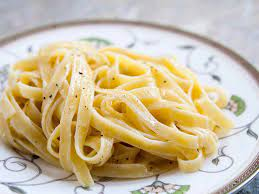

Easy Pasta

Description
Pasta is a staple of Italian cousine, and for good reason.
Both filling and savory, pasta finds itself easy to incorporate in a multitude
of other dishes. Whether by itself, covered with a red sauce, mixed with shrimp,
or topped with a fried chicken breast, it holds its own as one of the most
versatile foods. This recipe is a simple, yet delicious take on an alfredo-covered
shrimp and Fettuccini pasta dish.
Incredients
- 1/4 box uncooked Fettuccini noodles
- 1 8oz. jar Alredo sauce
- Salt
- Red pepper flakes
- 8-10 pieces frozen shrimp
Steps
- Fill a medium-sized sauce pan 3/4 full of water. Set over high heat
until boiling.
- Season the boiling water very generously.
- Add your noodles to the boiling water, folding the noodles over
themselves until they are all entirely submerged under water.
- Let cook for ~8 minutes or until al dente.
Strain the water from the noodels and leave in a bowl.
- On a lightly-sprayed skillet, cook your shrimp over medium heat on
each side for ~1 minute. Remove and add to bowl of pasta.
- In a small saucepan, add your alfredo sauce and let simmer over low
heat until warm. Add the sauce to the bowl of pasta and mix.